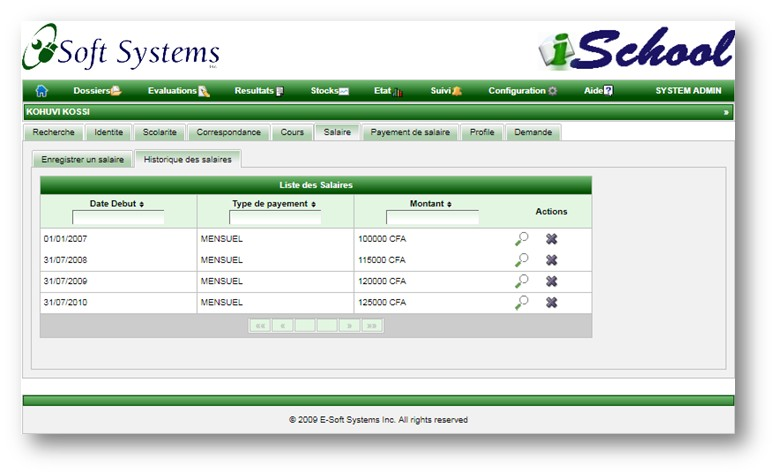
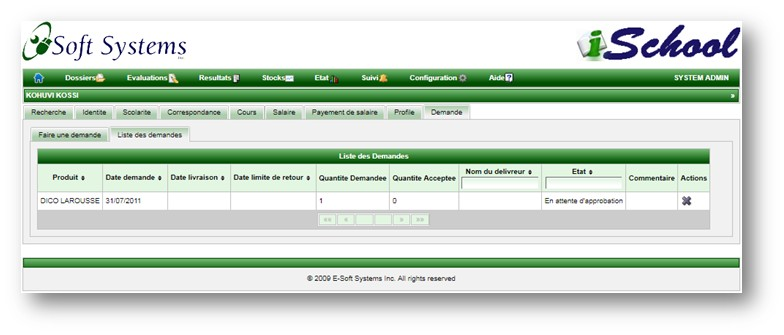

Cette page permet d'acceder au dossier complet des professeurs. Elle comprend plusieurs tabulations:
Recherche
La page de recherche permet de retrouver les professeurs et de consulter leur dossier.
La recherche se fait par le matricule, nom et prenom.
Un deuxieme niveau de recherche permet de filtrer dynamiquement par le matricule, nom, prenom et etablissement.
Les actions possibles sur un professeur sont les suivantes:
Permet de voir le dossier complet d'un professeur; notamment son contact, les cours qu'il dispense, sa scolarite, son profile, ses demandes, etc.
Permet de supprimer le professeur du systeme. Un professeur ayant un dossier ne peut etre supprime
Le dossier du professeur contient plusieurs "classeurs". Nous utilisons le terme classeur en lieu et place de tab.
Identite.
Le classeur Identite contient les informations de base du professeur tels que le nom, prenom, la date de recrutement et
les contacts.
Scolarite.
Ce classeur contient deux sous-classeurs. Un qui permet d'ajouter our de modifier les renseignements
scolaires et un autre qui permet de les visualiser. Les Renseignemts scolaires inclus notamment les
eventuels prix, reconnaissances ou information disciplinaire.
Ajout/Modification de renseignement scolaire
Liste de renseignements scolaires
Correspondance
Cette page permet d'envoyer des courriers aux professeurs. Une copie du courrier est envoyee par e-mail au professeur lorsque
la case "Envoyer une copie par e-mail" est cochee.
Envoi de courrier
Il faut noter que le professeur ne peut envoyer lui-meme des courriers a travers ce system. Il ne pourra que consulter les courriers qui lui ont ete envoyes.
Seul le classeur "Lire les correspondances" est affiche lorsqu'un professeur se connecte au system.
Consultation de courriers.
Correspondance
Ce classeur contient trois sous-classeurs. Un qui permet d'assigner un cours a un professeur, un deuxieme qui
permet de voir les cours actuellement dispenses par un professeur et un dernier qui permet de voir les cours
qu'un professeur a dispense par le passe.
Assignation d'un cours a un professeur.
Liste des cours actuellement dispenses par le professeur.
Liste des cours dispenses par le professeur par le passe.
Lorsqu'un cours est assigne a un professeur, il est enregistre dans l'historique du professeur qui l'enseignait au paravant.
Salaire
Ce classeur contient deux sous classeurs. Un qui permet d'enregistrer une augmentation de salaire et un autre
qui permet de voir l'historique des augmentations de salaire.
Enregistrer une promotion.
Voir les promotions passees.

Payement de salaire
Ce classeur contient deux sous classeurs. Un qui permet d'enregistrer un salaire et un autre
qui permet de voir l'historique des payements de salaire.
Enregistrement d'un payement de salaire.
Voir l'historique des payements de salaire.
Profile
Cette page permet de maintenir le profile du professeur. Le professeur peut changer le theme du site ainsi que son mot de passe.
Le professeur dispose de neuf themes qui correspondent a differentes varietes de couleurs. Le theme choisi prend effet a
la prochaine connection.
Demandes
Permet au professeur de soumettre ses demandes et d'en surveiller les etats. Une demande peut etre approvee
ou rejetee et le responsable dispose d'une case de saisie pour renseigner sur les eventuelles raisons de la
decision. La liste des produits est disponible dans le premier classeur afin que le professeur puisse choisir et effectuer
la reservation.
Liste des produits
En cliquant sur l'icone de loupe, une page apparait permettant d'enregistrer une demande
Liste des demandes

Copyright © 2011, E-Soft Systems Inc